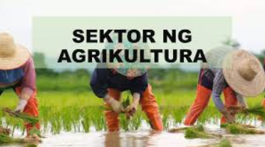
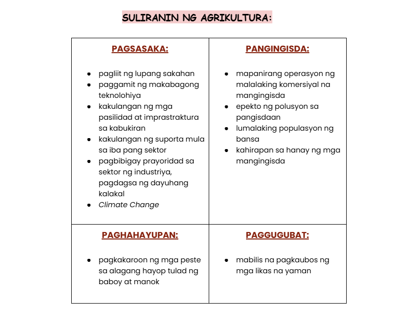
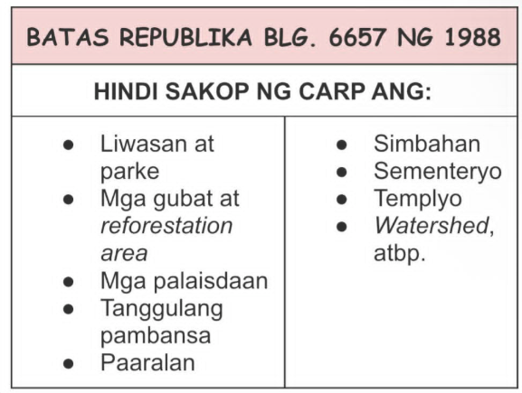

Lesson 2 - Agrikultura
- AGRIKULTURA
- -Isang agham at sining na may kinalaman sa pagpaparami ng mga hayop at mga tanim o halaman.
- -Ito ay may kaugnayan sa lahat ng gawain na sangkot ang mga hayop at halaman
- -AGER=Lupa; CULTURA=Paglilinang
- MGA GAWAIN SA SEKTOR NG AGRIKULTURA:
- -Pagsasaka
- -Pangingisda
- -Panghahayupan
- -Paggugubat/Pagtrotroso
- GAMPANIN NG PAGSASAKA:
- -Pangunahing pananim: palay, mais, niyog, tubo, saging, pinya, kape, mangga, tabako, at abaka na karaniwang kinokonsumo sa loob at labas ng bansa.
- -Tinatayang umabot ng ₱797.731 bilyon ang kabuuang kita mula sa pagsasaka.
- GAMPANIN NG PANGHAHAYUPAN:
- -May kinalaman sa mga hayop na itinaas para sa karne, hibla, gatas, itlog, atbp.
- -Kasama rito ang pang-araw-araw na pangangalaga, pumipili ng pag-aanak at pagpapalaki ng mga hayop.
- GAMPANIN NG PANGINGISDA:
- -Nauuri sa tatlo: komersiyal(malalaking isda), munisipal(pampang), at aquaculture(scientific fishing)
- -Bahagi din nito ay ang panghuhuli ng hipon, sugpo, at pag aalaga ng mga damong dagat na ginagamit sa paggawa ng gulaman.
- GAMPANIN NG PAGGUGUBAT:
- -Patuloy na nililinang ang ating mga kagubatan bagamat tayo ay nahaharap sa suliranin ng pagkaubos ng mga yaman nito
- -Pinagkukunan ng: plywood, tabla, troso, at veneer
- -Pinagkakakitaan din ang rattan, nipa, anahaw, kawayan, pulot-pukyutan, at dagta ng almaciga.

- KAHALAGAHAN NG AGRIKULTURA:
- -Pinagmumulan ng pagkain
- -Pinagkukunan ng hilaw na materyales upang makabuo ng panibagong produkto
- -Nagkakaloob ng trabaho sa maraming Pilipino
- -Nagpapasok ng dolyar sa ating bansa
- -Pinagkukunan ng sobrang manggagawa patungo sa ibang sektor ng ekonomiya

MGA PATAKARAN AT PROGRAMA HINGGIL SA PAGPAPAUNLAD SA SEKTOR NG AGRIKULTURA:
- PANAHON NA HINDI PA NASASAKOP ANG PILIPINAS
- -Ang mga sinaunang Pilipino ay nakakapag-may-ari ng lupa sa pamamagitan ng pagiging unang nagtayo ng bahay.
- -Wala pang titulo/rights noon.
- -Ang pinagbabasehan lamang ay salita ng bawat isa.
- PANAHON NG KASTILA
- -Encomienda System: lupang gantimpala sa matapat na naglilingkod sa hari ng Espanya at mga taong tumulong sa pananakop sa Pilipinas.
- PANAHON NG AMERIKANO
- -Binili ng Amerika ang 160,000 hectares ng lupa mula sa mga prayle para sa mga magsasaka.
- Land Registration Act ng 1902:
- -Nagkaroon ng mga titulo dahil dito.
- -Ito ay sistemang Torrens, kung saan ang mga titulo ng lupa ay ipinatalang lahat.
- Public Land Act ng 1902:
- -Pamamahagi ng mga lupaing pampubliko sa mga pamilya na nagbubungkal ng lupa
- PANAHON NG KASARINLAN
- Batas Republika Blg. 1160 ng 1954:
- -Nagtatag sa National Resettlement and Rehabilitation Administration (NARRA)
- Batas Republika Blg. 1190 ng 1954:
- -Bilang proteksyon laban sa mapang-abuso na may-ari ng lupa sa mga manggagawa.
- -Ito ay laban sa mga Absentee Landlord
- Agricultural Land Reform Code of 1963:
- -Nagpalaya sa mabigat na trabaho ng magsasaka mula sa kanilang pagkaalipin sa utang at kahirapan.
- -Nilagdaan ni Diosdado Macapagal noong Agosto 8, 1963
- Atas ng Pangulo Blg. 2 ng 1972:
- -Isailalim sa reporma sa lupa ang buong Pilipinas noong panahon ni Pangulong Marcos
- Atas ng Pangulo Blg. 27:
- -Bibilhin ng pamahalaan ang mga lupang sakahan na taniman ng palay/mais na lampas sa 7 ektaryang limitasyon at ipamamahagi ito sa mga magsasakang walang lupa.
- Batas Republika Blg. 6657 ng 1988:
- -“Comprehensive Agrarian Reform Law (CARL)” na inaprubahan ni Corazon Aquino noong Hunyo 10, 1988
- -Kabilang dito ang lahat ng publiko at pribadong lupang agrikultural at nakapaloob sa Comprehensive Agrarian Reform Program (CARP)
- -Ipinamamahagi ang lahat ng lupang agrikultural anuman ang tanim nito sa mga walang lupang magsasaka.
- -Matatapos sana sa 10 taon ngunit ginagawa pa rin ang batas hanggang ngayon

- MGA NAISAKATUPARAN UPANG MAIANGAT ANG KALAGAYANG PANGKABUHAYAN NG MGA MAGSASAKA (CARP, 2003)
- 1.Pagtatayo ng bahay-ugnayan (bagsakan) para sa mga magsasaka upang masigurong mayroon suportang maibigay sa kanila.
- 2.Pagtatayo ng gulayan para sa mga magsasaka.
- 3.Pagsisiguro na ang mga anak ng mga magsasaka ay makapag-aral kaya itinayo ang Pangulong Diosdado Macapagal Agrarian Reform Scholarship Program
- 4.Kalahi agrarian reform zones
- PANGINGISDA
- -Pagtatayo ng mga daungan
- -Philippine Fisheries Code of 1998: Paglilimita ng pamahalaan at naglalayon ng wastong paggamit sa yamang pangisdaan.
- -Fishery Research:Isang programa ng pamahalaan na isinasagawa upang masiguro ang pagpaparami at pagpapayaman sa mga yamang-tubig
- PAGTOTROSO
- -Community Livelihood Assistance Program (CLASP): Paglilipat ng teknolohiya/pagtuturo sa mga mamamayan ng wastong paglinang sa mga likas na yaman.
- -National Integrated Protected Areas System (NIPAS): Maingatan at protektahan ang kagubatan
- -Sustainable Forest Management Strategy: Upang matakdaan ang permanente at sukat ng kagubatan
- LANDBANK OF THE PHILIPPINES
- -Upang magkaroon ng kaagapay ang mga magsasaka sa pagpapaunlad ng kanilang kabuhayan.
- SANGAY NG PAMAHALAAN NA TUMUTULONG SA SEKTOR NG AGRIKULTURA
- -Department of Agriculture (DA): Gumagabay sa mga magsasaka ukol sa makabagong teknolohiya at wastong paraan ng pagtatanim.
- -Bureau of Fisheries and Aquatic Resources (BFAR): Sinisikap na paunlarin ang larangan ng pangingisda.
- -Bureau of Animal Industry (BAI): Nangangasiwa sa larangan ng paghahayupan.
- -Ecosystem Research and Development Bureau (ERDB): Nagsasagawa ng pananaliksik sa ecosystem upang magbigay ng siyentipikong batayan sa pangangalaga ng kapaligiran at yamang gubat.
< back to the AP home page